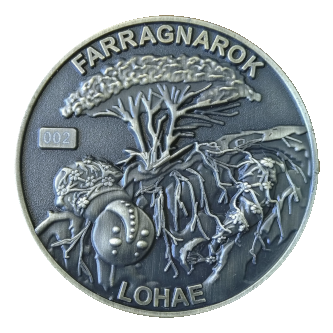
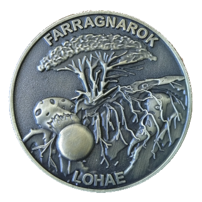
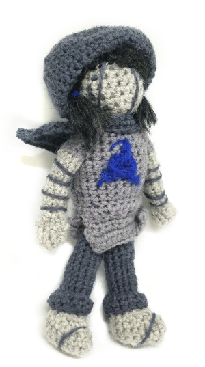

How would you like to be the GRAND PRIZE WINNER and have YOUR COIN selected to be paired to a LORAS STYLE MICRO GAME?
How to Enter:
Buy a LOHAE COIN
here (JR will contact you to figure out which numbered coin you want)
Or Send a physical letter to:
3600 Cherokee St
Suite #120 PMB 25301
Kennesaw, GA 30144
Details*:
Okay! So! FarragoFiction has had 113 coins commissioned (numbered 1 to 113), and unlike our last [REDACTED] set, we actually can publicly distribute them! They commemorate the Land of Horticulture and Essence, and depict the two forms of NIDHOGG, the DENIZEN of LOHAE.
If they sell well enough, and quickly enough, we'll be able to get started on commissioning the next land's coins (JR just really loves coins, its a thing), or even have coins made for entire other concepts! Or make pins! Who knows! Metal things are cool and shiny!
In order to encourage reality to cooperate with the MORE COINS TIMELINE, we're offering a NO PURCHASE NECESSARY SWEEPSTAKES!!! Each purchased coin will count as ONE ENTRY, or you can send a physical letter (so we get your address) to
3600 Cherokee St
Suite #120 PMB 25301
Kennesaw, GA 30144
Once all 113 coins are sold OR 150 entries (coin purchase or write in) are received OR January 13th, 2020 arrives, we will draw a random winner. (Any coin corresponding to an ideasWrangler, or A RANK will automatically be disqualified from winning, and we’ll draw randomly again). You will have a 1/NUMBER_OF_ENTRIES chance of winning, which will be at minimum 1/150!
One (1) Winner will receive the
GRAND PRIZE (Estimated Cash Value: $390 :
The FarragoFiction team will work with you to design a land. Estimated Cash Value: $50
We will create artwork of your land, including consorts and/or denizen. $120
We will create artwork of your avatar. $50
We will create a micro game on the scale of LORAS around the theme of your land. $120
JR will send you the handmade AB DOLL as featured in [???] $50

* Boy, running a sweepstakes is hard. Turns out theres lots of things you need to make sure you get right, like being really clear about what the prize is (no gigglesnort) and estimating the value of everything!